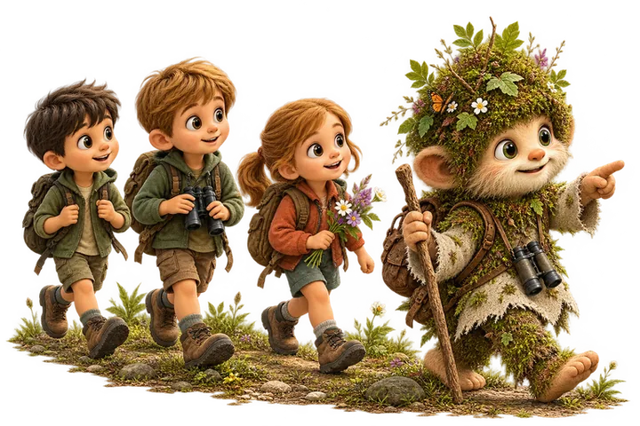

Vydejte se s Karpíkem do krajiny Moravských Kopanic, kde se mezi loukami a kopci ukrývají staré chalupy a příběhy dávných časů. Společně se zastavíte u dřevěné zvoničky, vydáte se po stopách zvířat, poznáte tradiční kopaničářské kroje a nahlédnete do života lidí, kteří zde kdysi hospodařili. Celou trasu si zobrazíte v mobilním telefonu a na jednotlivých zastaveních se společně s Karpíkem pustíte do hravých úkolů. Na konci putování odhalíte malé překvapení z kopaničářské chalupy – symbol celé žítkovské výpravy, který si uložíte do své sbírky.